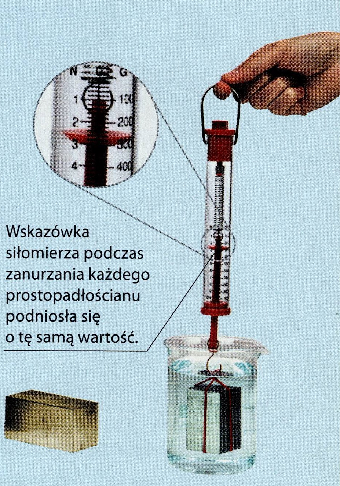
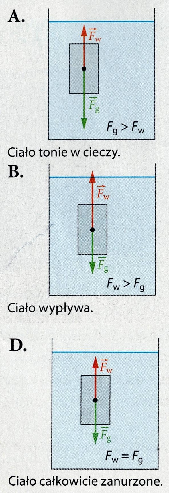

⚓ Prawo Archimedesa
📖
Lekcje i Rymowanka
Posłuchaj i zrozum siły
📝
TEST WIEDZY (8 pytań)
Błędy wracają do puli!
🏠 Wróć do Pulpitu
⬅ Wróć do Menu
Wykłady Audio
1. Pozorna utrata ciężaru

📢 Odtwórz Lekcję 1
2. Warunki pływania ciał

📢 Odtwórz Lekcję 2
3. Wesoła Rymowanka
🎵 Odtwórz Rymowankę
⬅ Przerwij
Trening Wyporu
W kolejce:
8
...
Rozumiem, Następne Pytanie ➡
🎉
Znakomicie!
Wszystko opanowane w 100%!
Wróć do Menu Głównego